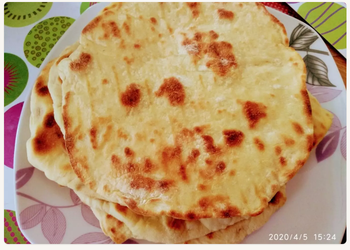

Συνταγή για Πίτα Σουβλακιού από Γιαούρτι

Πίτα για Σουβλάκι εμπνευσμένη από συνταγή του Άκη Πετρετζίκη
Συστατικά
- Γιαούρτι πλήρες
- Αλεύρι για όλες τις χρήσεις
- Ελαιόλαδο
Παρασκευή για μία Πίτα
-
Ανακατεύουμε μία κουταλιά της σούπας γιαούρτι
με αλεύρι, μέσα σε ένα μπολ και χρησιμοποιώντας ένα πηρούνι.
-
Συνεχίζουμε να ανακατεύουμε τη ζύμη προσθέτοντας όσο αλεύρι
χρειάζεται, ώστε η ζύμη που προκύπτει να ξεκολλά εύκολα.
-
Φτιάχνουμε ένα μπαλάκι με τη ζύμη.
-
Σε μία μεγάλη επίπεδη επιφάνεια καλυμμένη με αλεύρι,
απλώνουμε το μπαλάκι της ζύμης με έναν μικρό πλάστη,
μέχρι να πάρει το σχήμα της πίτας που θέλουμε.
-
Σε ζεστό τηγάνι με ελαιόλαδο ψήνουμε την πίτα
και από τις δύο πλευρές της, μέχρι να αποκτήσουν
χρώμα χρυσαφί.
Επιστροφή στην Κεντρική Σελίδα